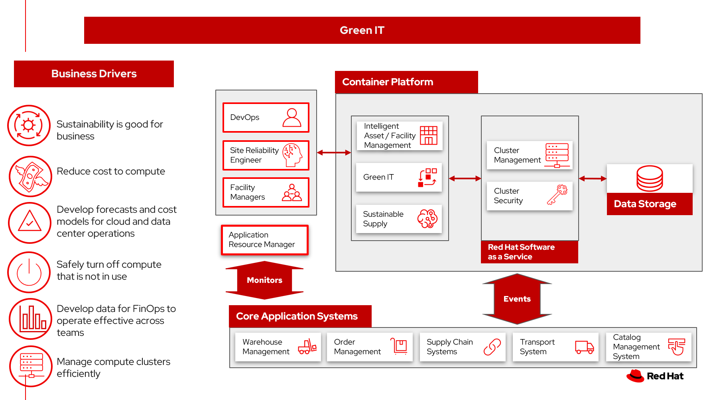

Green IT
Green computing (also known as green IT or sustainable IT) is the design, manufacture, use and disposal of computers, chips, other technology components and peripherals in a way that limits the harmful impact on the environment, including reducing carbon emissions and the energy consumed by manufacturers, data centers and end-users. Green computing also encompasses choosing sustainably sourced raw materials, reducing electronic waste and promoting sustainability through the use of renewable resources.
To maximize the value from cloud, FinOps provides the way for teams to manage their cloud costs, where everyone takes ownership of their cloud usage supported by a central best-practices group. Cross-functional teams in Engineering, Finance, Product, etc work together to enable faster product delivery, while at the same time gaining more financial control and predictability.
Use cases
- Develop forecasts and cost models for operations in the cloud.
- Reduce energy consumption and optimizes heating, ventilation and cooling.
- Provide data to purchasing departments for green computing decision making
- Turn off compute that is not in use, including central processing units (CPUs) and peripheral equipment such as printers.
- Develop data for FinOps to operate effectively across multiple disciplines.
Background
Every aspect of modern information technology — from the smallest chip to the largest data center — carries a carbon price tag, and green computing seeks to reduce that carbon price tag. Technology makers play a role in green computing, as do the corporations, organizations, governments and individuals that use technology.
“The energy demands and carbon output of computing and the entire ICT sector must be dramatically moderated if climate change is to be slowed in time to avoid catastrophic environmental damage,” according to a report published by the Association for Computing Machinery.
Business problem
Digital transformation puts increasing pressure on IT to finally get the performance-cost challenge right
The consequences of not solving the performance versus cost problem are environmental as well as financial
Everyone gets it—the sustainable business must consume cloud and IT resources efficiently
Challenges / Business Drivers
Challenges
- Competing priorities across the IT organization make alignment between teams difficult
- Increasing
Business drivers
- Cost of compute
- Develop forecasts and cost models for operations
- Turn off compute that is not in use
- Develop data for FinOps to operate effectively across multiple disciplines
Responses
Data centers, server rooms and data storage areas have a significant opportunity to run more efficiently.
In such areas, setting up hot and cold aisles is an important step toward greener computing because it reduces energy consumption and optimizes heating, ventilation and cooling. When automated systems designed to control temperature and similar conditions are combined with hot and cold aisles, emissions are further lowered. Cost savings from reducing energy use may eventually be realized, as well.
One simple step toward efficiency is to make sure things are turned off. Central processing units (CPUs) and peripheral equipment such as printers should be powered down when not in use. Scheduling blocks of time for specific tasks like printing means peripherals are only in use when they are needed.
Purchasing departments have a role to play in green computing, too. Choosing equipment that will last and consumes the least amount of energy necessary for the task to be performed are both ways to reduce the carbon footprint of IT. Notebooks use less energy than laptops, and laptops use less energy than desktop computers, for example.
FinOps is an evolving cloud financial management discipline and cultural practice that enables organizations to get maximum business value by helping engineering, finance, technology, and business teams to collaborate on data-driven spending decisions.8 The FinOps Foundation recognized that traditional operations in the cloud are too siloed in their approach to how cloud spend is managed and controlled. As we’ve previously noted, these (over)spending decisions have environmental implications
Business outcomes
- Reduce energy costs in the data center
- Reduce your carbon footprint by optimizing the data center
- Optimize cloud costs
- FinOps aims to build cross-functionally to maximize business value
- Safely reduce your cloud and data center consumption
- Provide data to demonstrate business value of using renewable energy, improving heating and cooling, demanding hardware efficiency, efficient cloud resources
Solution overview
The solution shown in Figure 1 uses components that can be grouped into three main categories as shown in the following diagram:
- Core application systems. Often customer-provided technologies, such as order management, facilities management. These systems can be stand-alone applications, on premises and cloud services, databases.
- Foundational infrastructure. The Red Hat/IBM solution is built on Red Hat OpenShift. Data is routed through API management. Events are routed through Business Automation tools such as Business Automation Workshop.
- Sustainable enterprise systems acts to coordinate facilities management with workplace management backed by sustainability reporting.

Figure 1. Overall view of sustainable facilities solution.
The sustainable enterprise works within the existing enterprise infrastructure.

Figure 2. Sustainable enterprise works within existing digital infrastructure.
Logical diagrams

Figure 3. The personas and technologies that provide a platform for some of the biggest potential breakthroughs in managing a sustainable enterprise.
Architecture
!TODO
Action Guide
From a high-level perspective, the Action Guide represents a future state for organizations considering a comprehensive commitment. The idea is to outline a set steps that can be prioritized to reach that future state by adding new functionality to your existing systems.
- Automation
- Sustainability
- Modernization
| Actionable Step | Implementation details | |
|---|---|---|
| Automization | Automate compute resources |
|
| Automation | Amp up AI to make workflows smarter | Use AI and compute consumption to identify usage patterns and provide appropriate responses |
| Sustainability | Increase Green IT in your data center | Identify and measure application needs, shut down servers when they are not needed |
| Sustainability | Establish FinOps practice | Provide the way for teams to manage their cloud costs, where everyone takes ownership of their cloud usage supported by a central best-practices group |
| Modernization | Modernization for modern infrastructures, scale hybrid cloud platforms | The decision for a future, Kubernetes-based enterprise platform is defining the standards for development, deployment and operations tools and processes for years to come and thus represents a foundational decision point. |
| Modernization | Modernize application deployment and operations practices | Include DevOps best practices to deploy, monitor, and maintain applications |
For specific steps on this approach, see The Action Guide details in Own Your Transformation survey of 1500 CSCOs across 24 industries.
Technology
The following technologies offered by Red Hat and IBM can augment the solutions already in place in your organization.
Core systems
Red Hat OpenShift Kubernetes offering, the hybrid platform offering allow deployment across data centers, private and public clouds offering choices and flexible for hosting system and services. You can manage clusters and applications from a single console, with built-in security policies with Red Hat Advanced Cluster Management and Red Hat Advanced Cluster Security.
Red Hat Ansible Automation Platform operate, scale and delegate automate IT services, track changes an update inventory, prevent configuration drift and integrated with ITSM.
Red Hat OpenShift DevOps represents an approach to culture, automation and platform design intended to deliver increased business value and responsiveness through rapid, high-quality service delivery. DevOps means linking legacy apps with newer cloud-native apps and infrastructure. A DevOps developer can link legacy apps with newer cloud-native apps and infrastructure.
Integration services
Red Hat OpenShift API Management is a managed API traffic control and program management service to secure, manage, and monitor APIs at every stage of the development lifecycle.
Red Hat Intgration is a comprehensive set of integration and messaging technologies to connect applications and data across hybrid infrastructures. It is an agile, distributed, containerized, and API-centric solution. It provides service composition and orchestration, application connectivity and data transformation, real-time message streaming, change data capture, and API management.
IBM Business Automation delivers intelligent automations quickly with low-code tooling, such as business processes automation, decisioning software, robotic process automation, process mining, workflow automation, business process mapping, Watson Orchestrate, content services, and document processing.
IBM Data Fabric empowers your teams and works across the ecosystem by connecyting data from disparate data sources in multicloud envrionments. In particular, Watson Knowledge Catalog provides you users with a catalog tool for intelligent, self-service discovery of data, models. Watson Query provides data consumers with a universal query engine that executes distributed and virtualized queries across databases, data warehouses, data lakes, and streaming data without additional manual changes, data movement or replication.
Sustainable enterprise sub-system
Envizi simplifies the capture, consolidation, management, analysis and reporting of your environmental, social and governance (ESG) data.
IBM TRIRIGA harnesses the power of data and AI to infuse sustainability into your real estate and facilities management operations.
IBM Maximo Application Suite (MAS) Infuse sustainability into your asset management by harnessing the power of data and AI.
IBM Turbonomic monitors resource consumption of applications within the data center. It provides FinOps engineering teams the ability to ensure your applications are performing efficiently, allowing cloud and ITOps teams to cut cloud spend and multiply ROI.
Transparent Supply provides supply chain management with a robust traceability solution.
References
- What is Green Computing?
- State of FinOps 2023
- IBM journey to more sustainable facilities: IBM as client zero
- IBM Institute for Business Value Balancing sustainability and profitability
- What is sustainability in business?
- IBM Institute for Business Value Sustainability at a turning point
- Accelerating FinOps & Sustainable IT
- Forrester: Total Economic Impact of IBM Turbonomic Application Resource Management
Contributors
- Iain Boyle, Chief Architect, Red Hat
- Mahesh Dodani, Principal Industry Engineer, IBM Technology
- Thalia Hooker, Senior Principal Specialist Solution Architect, Red Hat
- Lee Carbonell, Senior Solution Architect & Master Inventor, IBM
- Eric Singsaas, Account Technical Lead, IBM Technology
- Mike Lee, Principal AI Ops Technical Specialist, IBM
- Rajeev Shrivastava, Account Technical Lead, IBM
- Bruce Kyle, Sr Solution Architect, IBM Client Engineering